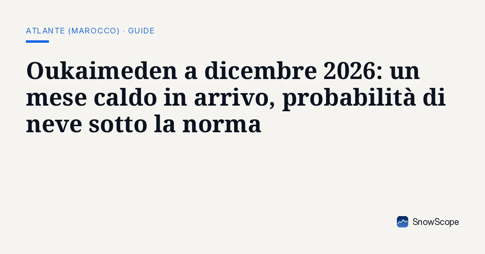
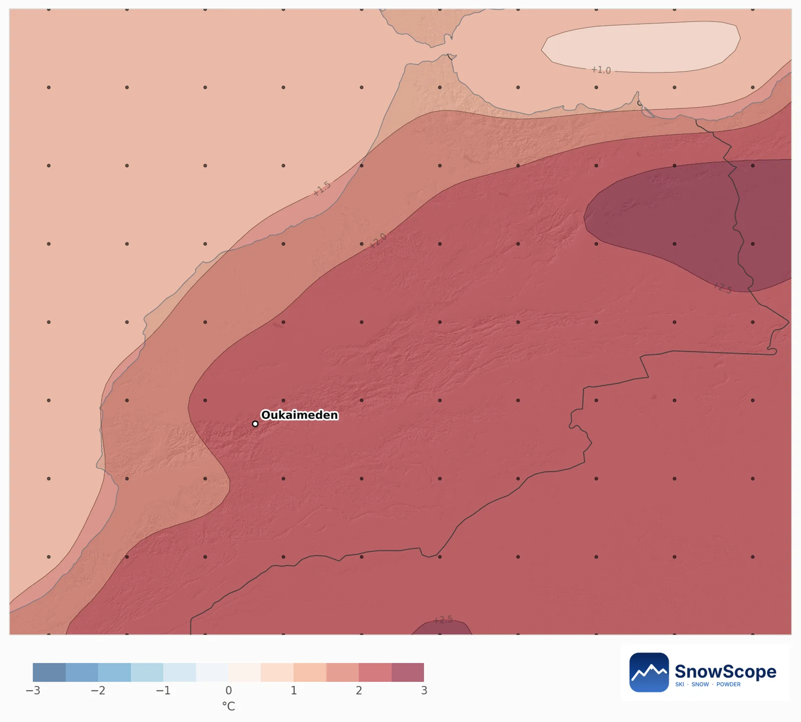

Oukaimeden a dicembre 2026: un mese caldo in arrivo, probabilità di neve sotto la norma
Oukaimeden si presenta nuda il 10 novembre. I 6 cm caduti in quota la settimana scorsa sono scomparsi, e la prossima settimana non porta neve fresca. La previsione stagionale per dicembre è decisamente calda sull'Atlante superiore, e questo sposta le probabilità di neve nettamente al ribasso.
Le previsioni neve in tempo reale per Oukaimeden nell'app SnowScopeAltezza neve, allerte powder e mappa 3D, gratis.

Nessuna neve al suolo in questo momento
La mappa mostra 0 cm ovunque: base a 2.600 m, media montagna a 2.930 m e vetta a 3.260 m. Solo l'1 % del terreno entro 60 km è bianco. Mostriamo la montagna nuda invece—i crinali alti del Toubkal dove la neve si attacca prima quando arriva l'inverno—così puoi vedere dove osservare l'apertura della stagione.
La settimana scorsa ha portato 1 cm a media quota e 6 cm in vetta, ma nessuno è rimasto. I prossimi sette giorni non mostrano neve prevista a nessuna quota.
Prospettive per dicembre: più caldo del solito, neve più scarsa
La mappa SnowScope confronta le montagne dell'Atlante superiore attorno a Oukaimeden con la loro storia. Nella regione, il 95 % dell'area mostra un segnale di neve a dicembre più magro—meno posti del solito riceveranno accumuli significativi. Nessuna delle 55 celle di griglia montuosa indica una prospettiva più nevosa.
La probabilità di neve nuova al di sopra della media di dicembre varia dal 29 % al 43 % nell'arco della catena. Questo significa grosso modo una probabilità su tre, nel migliore dei casi, che questo mese sia più umido dei dicembri passati.

Cosa porta solitamente dicembre e come appare quest'anno
In un tipico dicembre, i pendii alti di Oukaimeden attorno a 3.200 m ricevono 41 cm di neve nuova e mantengono 26 cm al suolo entro l'ultimo giorno del mese. La prospettiva per quest'anno è 37 cm di neve nuova ma solo 13 cm rimasti il 31 dicembre. L'intervallo di incertezza è ampio: tra 0 e 29 cm è la banda più probabile. La probabilità che la neve sia più profonda del solito entro fine mese è solo del 26 %.
Il caldo è il fattore determinante. I dicembri passati che questa previsione assomiglia più da vicino sono 2010, 2023 e 1989—anni quando le tempeste atlantiche erano scarse e l'aria di dicembre manteneva più calore che freddo. In questi mesi, la neve che cade si scioglie velocemente sotto il sole invernale forte su roccia nuda, specialmente alle quote più basse.


Il sistema stagionale europeo: caldo quasi certo, segnali misti sulle piogge
Le 51 corse della previsione stagionale principale europea sono sorprendentemente concordi su un punto. Il novantaquattro percento prevede un dicembre più caldo della media 1993-2016, con un riscaldamento medio di 2,2 °C sull'Atlante superiore. Un consenso così ampio sul caldo raramente si verifica.
I segnali di precipitazione dividono le previsioni. Cinquantuno percento prevede un mese più umido del solito; 49 % prevedono uno più secco. In media, la previsione aggiunge l'11 % ai tipici 33 mm di dicembre—un piccolo surplus. Eppure in queste montagne, la temperatura conta più del totale delle precipitazioni. La neve risponde strettamente a quello che cade (correlazione 0,91 con le precipitazioni) ma perde terreno al caldo. Pochi gradi di calore extra trasformano le precipitazioni che cadono in pioggia sui pendii più bassi e accelerano lo scioglimento su quelli alti.

Quando osservare, e quando la neve persiste più a lungo
Una tempesta atlantica può ancora invertire il quadro mensile entro giorni, quindi la prospettiva di dicembre è uno spostamento delle probabilità, non una previsione fissa. Le tempeste di dicembre sono rare nell'Atlante, ma non impossibili. Quando una arriva—con aria fredda in quota e precipitazioni organizzate—i pendii più alti di Oukaimeden diventano bianchi rapidamente.
Se la neve cade, il tetto (sopra 3.200 m) la mantiene più a lungo perché l'aria rimane più fredda in quota e l'angolo del sole è più basso. I pendii di media montagna e la base perdono l'accumulo entro giorni una volta che un periodo caldo ritorna. Per questo la neve di inizio stagione a Oukaimeden è una finestra, non una base.
Consigli per sciatori
- Verifica la previsione di tempeste a 7 giorni prima di pianificare una visita a inizio dicembre. Un singolo sistema atlantico può portare neve ai pendii alti anche in un mese caldo.
- Se arriva neve, scia o cammina sul terreno più alto (sopra 3.200 m) entro 48 ore dalla tempesta; le quote più basse saranno nude entro giorni.
- Porta strati: dicembre nell'Atlante oscilla tra pomeriggi caldi e notti fredde, e i pendii soleggiati possono sembrare primaverili anche a 3.000 m.
- Per escursioni sopra 3.000 m, porta scarpe da roccia o ramponi; aspettati principalmente terreno nudo a dicembre 2026 e improvviso ghiaccio dove l'acqua di fusione si ricongela di notte.
- Prima di andare fuoripista dopo una rara caduta di neve a dicembre, verifica il bollettino valanghe ufficiale per la regione dell'Atlante.
Su questi numeri
Le altezze neve delle località sono la neve più alta sui pendii superiori alla data indicata; sono stime per un'area, non una misura in un punto. Le previsioni possono cambiare. Leggi sempre il bollettino valanghe ufficiale prima del fuoripista.
Cita questo articolo
Per ricerca, didattica o stampa: numeri e grafici sono liberamente riutilizzabili con licenza CC BY 4.0 citando così.
SnowScope (2026), Oukaimeden a dicembre 2026: un mese caldo in arrivo, probabilità di neve sotto la norma, https://snowscope.app/blog/it/2026/11/oukaimeden-december-2026-snow-outlook.html, consultato il 2026-11-10
SnowScope (Atlas Labs). (2026, November 10). Oukaimeden a dicembre 2026: un mese caldo in arrivo, probabilità di neve sotto la norma. SnowScope snow reports. https://snowscope.app/blog/it/2026/11/oukaimeden-december-2026-snow-outlook.html
BibTeX
@misc{snowscope2026oukaimedendecember2026sn,
author = {{SnowScope (Atlas Labs)}},
title = {Oukaimeden a dicembre 2026: un mese caldo in arrivo, probabilità di neve sotto la norma},
year = {2026},
month = nov,
howpublished = {\url{https://snowscope.app/blog/it/2026/11/oukaimeden-december-2026-snow-outlook.html}},
note = {Published 2026-11-10 09:30 UTC; accessed 2026-11-10}
}· CC BY 4.0 · Metodi, dati e strumenti →
Segui Oukaimeden
Gratis: un messaggio quando arriva la neve e il meteo ogni mattina.
Altri bollettini neve

Le località sciistiche dell'Atlante oggi non trattengono neve sulle piste. La neve è immagazzinata solo sulle vette più alte: circa 40 km² di …
Circa 65 mm sul Toubkal entro il 12 novembre, ma lo zero termico resta vicino a 4.000 m: pioggia a Oukaïmeden e nelle valli, neve solo in cima.